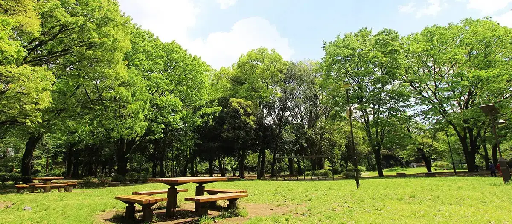

Suginami, Tokyo: things to do, food and stays
Suginami · Tokyo
Suginami
Highlighted on the Tokyo map.

Sights
Dining
Tonkatsu Narikura
とんかつ成蔵

Meat restaurant in Suginami, Tokyo.
kouenji yakiniku kokochi Honten
高円寺 焼肉ここち 本店

Meat restaurant in Suginami, Tokyo.
SATO BRIAN Sangou
SATOブリアン さんごう

Meat restaurant in Suginami, Tokyo.
SOBA-Shiro Kuro
麺処 しろくろ

Noodle restaurant in Suginami, Tokyo.
SATO Brian Nanaban
SATOブリアン七番

Meat restaurant in Suginami, Tokyo.
Misokko Fuku
味噌っ子 ふっく

Noodle restaurant in Suginami, Tokyo.
Sosaku Men Hitosuji
創作麺 ひとすじ

Noodle restaurant in Suginami, Tokyo.
Jun Teuchi Daruma
純手打ち だるま

Noodle restaurant in Suginami, Tokyo.
Shio Soba Jikuu
塩そば 時空

Noodle restaurant in Suginami, Tokyo.
Sakurajosui Funakoshi
桜上水 船越

Noodle restaurant in Suginami, Tokyo.
Dashi to Men Yuei
だしと麺 遊泳

Noodle restaurant in Suginami, Tokyo.
Yoshida Curry
吉田カレー

Chinese or Asian restaurant in Suginami, Tokyo.
Gelateria Sincerita
ジェラテリア シンチェリータ

Cafe in Suginami, Tokyo.
Ryo
麺家 龍

Noodle restaurant in Suginami, Tokyo.
Curry Shop Fennel
カレーショップ フェンネル

Chinese or Asian restaurant in Suginami, Tokyo.
Shina Soba Tantantei
支那そば たんたん亭

Noodle restaurant in Suginami, Tokyo.
Raamen Yama to Ki
らぁめん 山と樹

Noodle restaurant in Suginami, Tokyo.
Nishieifuku no Niboshi Bako
西永福の煮干箱

Noodle restaurant in Suginami, Tokyo.
Men Mikoto RAGE
麺尊 RAGE

Noodle restaurant in Suginami, Tokyo.
there is ramen

Noodle restaurant in Suginami, Tokyo.
Whole Spice Curry Seiran
ホールスパイスカレー青藍

Japanese restaurant in Suginami, Tokyo.
Hatsune
はつね

Noodle restaurant in Suginami, Tokyo.
RAMEN CiQUE

Noodle restaurant in Suginami, Tokyo.
[Relocated]Hakodate Shio Ramen Goryokaku
函館塩ラーメン 五稜郭
![[Relocated]Hakodate Shio Ramen Goryokaku](/media/tokyo-suginami-tb13154596.webp)
Noodle restaurant in Suginami, Tokyo.
Harukiya Ogikubo honten
春木屋 荻窪本店

Noodle restaurant in Suginami, Tokyo.
CURRY SHOP Kujira Kouenji
CURRY SHOP くじら 高円寺

Chinese or Asian restaurant in Suginami, Tokyo.
negombo33 Kouenji
negombo33 高円寺

Cafe in Suginami, Tokyo.
Noko Ramen Kanaya
濃厚ラーメン かなや

Noodle restaurant in Suginami, Tokyo.
Eifukucho Taishoken
永福町 大勝軒

Noodle restaurant in Suginami, Tokyo.
FRENCH CURRY SPOON
フレンチカレー スプーン

European restaurant in Suginami, Tokyo.
Clam & Bonito Kaibushi Men Like
クラム＆ボニート 貝節麺ライク

Noodle restaurant in Suginami, Tokyo.
Echigo Tsuruy
越後鶴屋

Sweets and bakery shop in Suginami, Tokyo.
Tonkotsu Aoto
豚骨 蒼翔

Noodle restaurant in Suginami, Tokyo.
Pizzeria Trattoria da Okapito Reservation
ピッツェリア トラットリア ダ オカピート

European restaurant in Suginami, Tokyo.
Hakata Ramen Barikote
博多ラーメン ばりこて

Noodle restaurant in Suginami, Tokyo.
Indian Fu Curry Rice Supaisu
インド風カリーライス すぱいす

Chinese or Asian restaurant in Suginami, Tokyo.
Stay
JR-East Hotel Mets Koenji
JR東日本ホテルメッツ 高円寺

JR-East Hotel Mets Koenji is a hotel in Suginami, Tokyo.